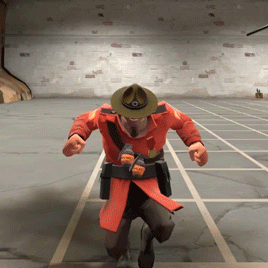

Itens são objetos que o jogador pode colecionar e usar no Team Fortress 2. Com algumas exceções, armas são o único tipo de item do jogo que influencia diretamente no jogo; todos os outros itens são puramente cosméticos.
Existem 5 tipos de itens - Armas, itens cosméticos, ferramentas, itens de ação e provocações.
Os itens possuem as seguintes qualidades:
As informações do item no inventário aparecem da seguinte forma:
Itens cosméticos
São itens que podem ser equipados em qualquer umas dos três slots de cosméticos disponíveis na tela de equipamentos. Enquanto a maioria dos cosméticos podem ser obtidos através de obtenção, fabricação ou comprados da Loja Mann Co., alguns cosméticos somente estão disponíveis por outros meios. Muitos cosméticos só podem ser obtidos quando se completam conquistas. Outros cosméticos têm sido adicionados como promoções de outros jogos do Steam e eventos da Loja do Steam. Enquanto é possível obter estes cosméticos pelo sistema de trocas com outros jogadores, não há a opção de comprá-los na Loja da Mann Co.
Alguns itens cosméticos:
Capuz do Espectro
Guarda Negra
Elmo do Tirano
Bico Infectado
Ferramentas
Ferramentas (Tools) são itens usáveis no Team Fortress 2. As ferramentas têm vários fins cosméticos, embora não poderem afetar diretamente a jogabilidade em si.
Itens de Ação
Itens de ação são itens usáveis. Itens de ação são similares as Ferramentas, em que tem um número limitado de usos. A diferença é que Itens de ação podem ser equipados no jogador usando seu próprio compartimento. A maioria dos Itens de ação podem per comprados via Loja Mann Co., com a exceção do Minigame de duelo, Palheta de Caixas, Cantil de Poder, Cantil de Baterias, Revista de Feitiços, Livro de Feitiços e Diário Secreto à Prova de Fogo. Atualmente, Itens de ação não podem ser usados ou obtidos dentro do sistema de fabricação.
Provocações
"São animações específicas de cada personagem que podem ser ativadas durante a partida para anunciar que você acabou de matar alguém ou deseja ser morto."
Cada classe tem o seu próprio conjunto de provocações, que podem ser realizados usando a tecla padrão "G".
Algumas provocações:
 
Mannrobics

Dança dos Cossacos/Kazotsky Kick

Conga
Acordeão do Cirurgião
Armas
As armas são vários itens que são usados em combate, executando provocações especiais, ou são reskins para o jogador admirar. A armas são dadas aos jogadores como forma de obtenção aleatória, por fabricação, por completar conquistas, por abrir uma determinada caixa ou troca, e podem ter uma qualidade de item.
Exemplo de reskins de armas - Australium
Arma Médica de Austrálio
|
|